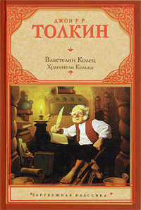

5 лучших книг мира по версии BBC
Список лучших книг был составлен в начале 21 века BBC на основании отзывов 1 млн читателей, принявших участие в опросе

Джон Р.Р. Толкин «Властелин колец»

Джейн Остин «Гордость и предубеждение»

Филип Пулман «Тёмные начала»

Дуглас Адамс «Автостопом по галактике»